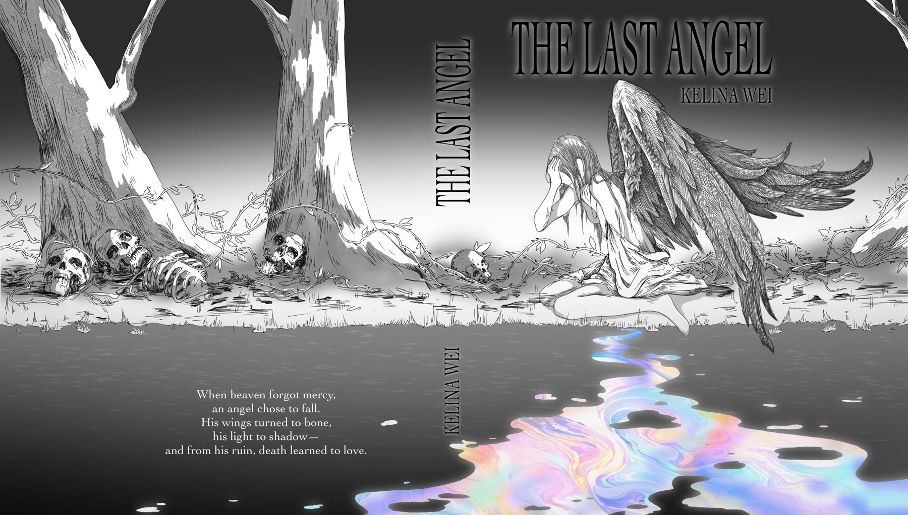
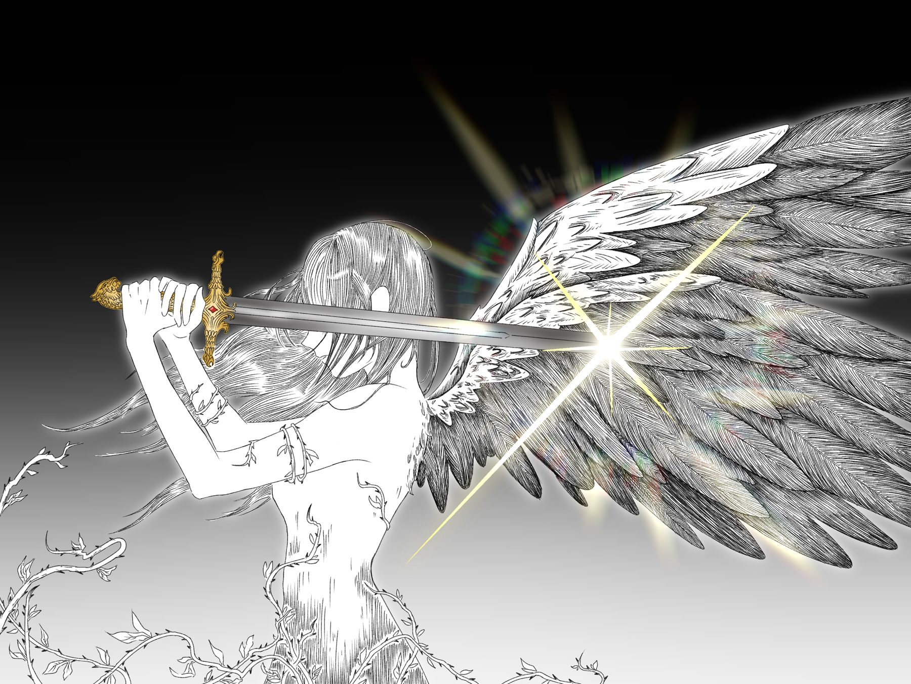
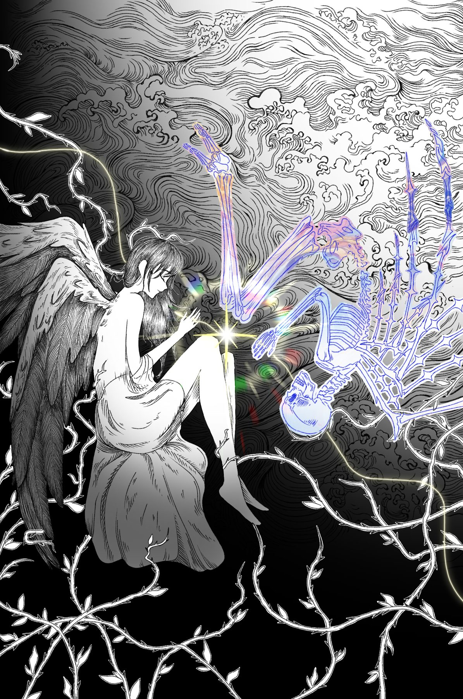
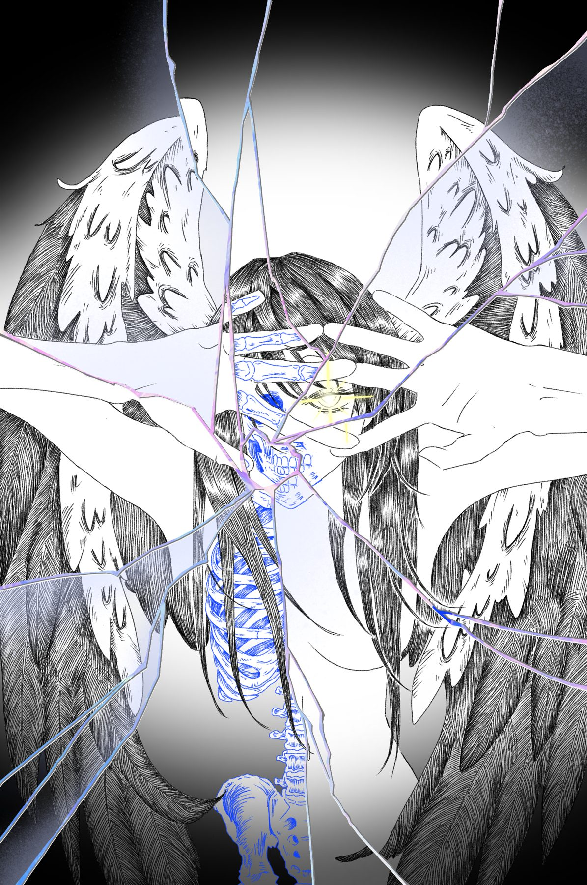
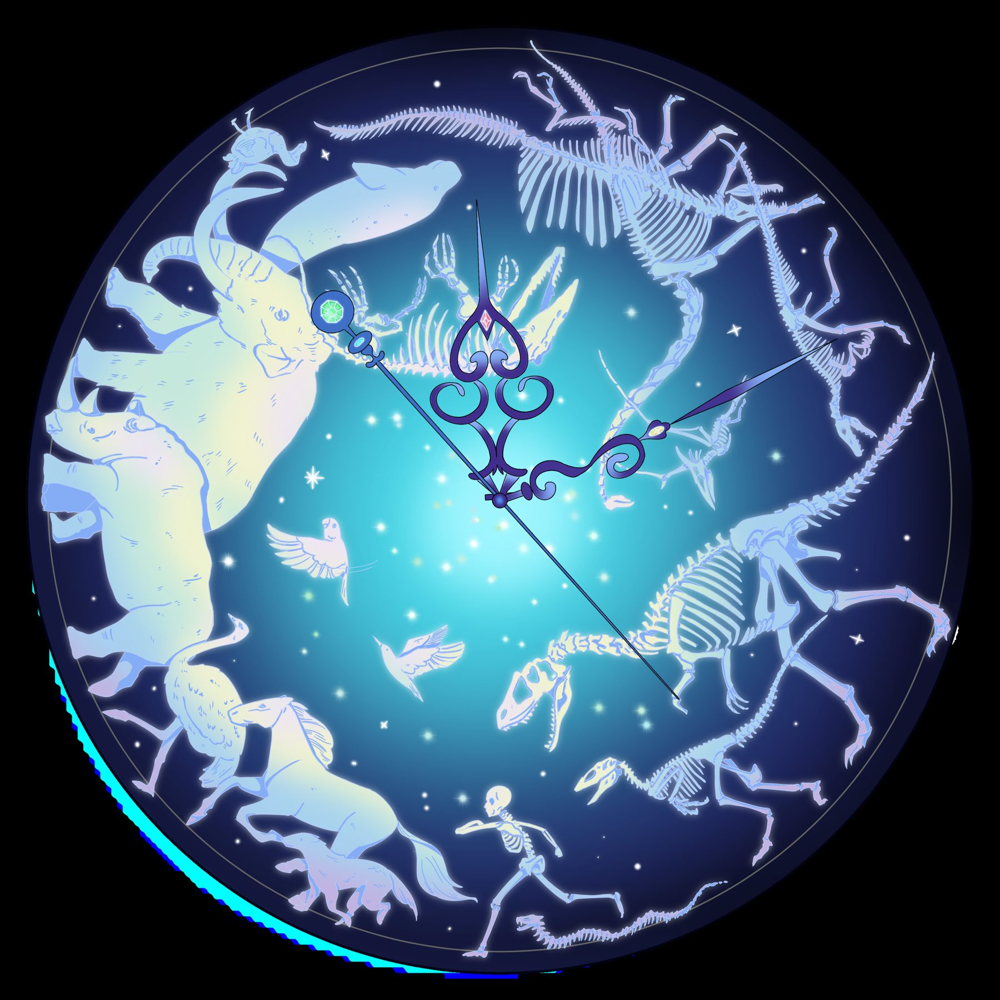

Book Illustration Series
An angel’s descent unfolds through moments of rupture and reflection, tracing the fragile boundary between purity and ruin.




[Optional: 2–3 sentences on process — the story you illustrated, your tools, what you were exploring.]
